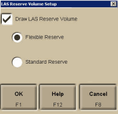

Reserve Volume - Flexible and Standard
Definitions
- Reserve Volume—A specified excess quantity of sample stored onboard for tests that are likely to be required later (reflex tests).
- Reflex Tests—Additional tests that are requested based on prior results.
Function
- Provides a method for operators to perform reflex testing without needing to reload patient samples.
- Stores a reserve volume from each sample on the sample storage module in SVs (sample vessels) to be used later, if needed.
Overview
The Reserve Volume feature works with the Reflex Test function in the DxI user interface. The option to use both standard and flexible reserve volume is available only on DxI systems running software version 4.1 and higher. The operator must enable reserve volume and configure a maximum reserve volume separately for standard reserve volume, ranging from 10 to 1000 µL. The maximum volume for flexible reserve volume is not configurable and is predefined to be 1000 µL.
- The system then calculates the volume that is necessary for the reflex tests based on the volume pickup for each specific assay that is configured. This volume is drawn and the volume drawn for requested tests.
- When reflex conditions = TRUE, the DxI draws from the reserve volume SVs to complete the reflex tests automatically. If the volume necessary to complete the reflex test exceeds the maximum configured, only the maximum configured amount is drawn.
- The system uses the single amount configured by the operator. This volume is drawn and the volume drawn for requested tests.
- When reflex conditions = TRUE, the DxI draws from the reserve volume SVs to complete the reflex tests automatically.
Reserve Volume Differences
- The standard reserve volume, available in software versions before 4.1, aspirates one specified volume of sample no matter what test is set up for the reflex condition.
- The flexible reserve volume, available in software versions 4.1 and greater, calculates the volume of sample to aspirate based on the test volume for the reflex condition. Software version 4.1 and greater provides the option to use both standard and flexible reserve volume with stand-alone DxI Systems.
Enabling Reserve Volume
- Calibration, Maintenance, or Service Assays, or
- Samples loaded in designated No-Reserve racks.
Configuring LAS Reserve Volume
Perform these steps to configure reserve volume on DxI systems connected to lab automation.
This procedure only applies to systems running software version 4.2 and higher. For systems running software version 4.1, only standard reserve is used when Enable Reserve Volume is selected.
- Select .
- Select
Draw LAS Reserve Volume and select
Flexible Reserve or
Standard Reserve.

Note:- The Reserve Volume option is the same for all tubes, but does not affect the reserve volume rack configurations for racks loaded on the SPU.
- It is not possible to designate LAS tubes as No-Reserve. If the Draw LAS Volume feature is disabled, then no reserve volume is taken from any sample container and all reflex test requests are listed in Work Pending. The original sample must be reloaded to process the reflex test request.
Integrated Platforms
- For Software Version 4.1: If Enable Reserve Volume is selected, then the Flexible Reserve Volume feature applies to all integrated platform tubes when the tubes contain a test that has a reflex condition assigned to it in the DxI user interface.
- For Software version 4.2 and higher: If Enable Reserve Volume is selected (in the DxI user interface), then the configuration of racks for Flexible, Standard, or No Reserve must be done through the DxC user interface.
Rules for Aliquoting Standard Reserve Volume
- If the reserve volume plus the requested test volume is less than 500 µL, then all of the sample is aliquotted into one SV.
- If the reserve volume plus the requested test volume exceeds 500 µL, then the reserve volume is aliquotted separately into one (or possibly two) additional SVs.
- If the reserve volume is greater than 500 µL, then the reserve volume requires additional SVs.
- Each SV requires a portion of sample to satisfy dead volume (60 µL) and overdraw requirements (20 µL OR 5% of net plus dead volume, whichever is greater).
- Additional SVs cause the required volumes to be larger than the configured reserve volume. For example, a draw reserve volume set to 500 µL actually uses 588 µL of sample (500 + 60 + 28) because of the extra sample that is needed for the dead and overdraw requirements of the additional SVs.
- One SV required:
- Requested tests are CKMB (55 µL) and AccuTnI (40 µL) = 95 µL
- Reserve volume is set to 200 µL
- Dead volume = 60 µL
- Overdraw = 20 µL
- Total sample aspirated = 375 µL
- Two SVs required:
- Requested tests are CKMB (55 µL) and AccuTnI (40 µL) = 95 µL
- Reserve volume is set to 500 µL
- First SV requires 175 µL (= 95 + 60 + 20)
- Second SV requires 588 µL (= 500 + 60 + 28)
- Total sample aspirated = 763 µL
Rules for Aliquoting Flexible Reserve Volume
- If the reserve volume plus the requested test volume is less than 500 µL, then all of the sample is aliquotted into one SV.
- If the reserve volume plus the requested test volume exceeds 500 µL, then the reserve volume is aliquotted separately into one (or possibly two) additional SVs.
- If the reserve volume is set to a value greater than 500 µL, then the reserve volume requires two more SVs.
- Each SV requires a portion of sample to satisfy dead volume (60 µL) and overdraw requirements (20 µL OR 5% of net plus dead volume, whichever is greater).
- Additional SVs cause the required volumes to be larger than the configured reserve volume. For example, a draw reserve volume set to 500 µL actually uses 588 µL of sample (500 + 60 + 28) because of the extra sample that is needed for the dead and overdraw requirements of the additional SVs.
- If multiple reps are requested for a sample that has a reflex condition enabled, then only enough volume is drawn to run one set of tests for the reflex condition.
- If the reserve volume needed for a reflex condition exceeds the maximum that is set, then only the reps with enough volume are run.
- One SV required:
- Requested tests are CKMB (55 µL) and AccuTnI (40 µL) = 95 µL
- Reflex condition is set for AccuTnI to reflex to AccuTnI and CKMB
- Maximum Flexible reserve volume is set to 200 µL, for this reflex condition reserve volume equals 95 µL
- Dead volume = 60 µL
- Overdraw = 20 µL
- Total sample aspirated = 270 µL
- One SV required, with reserve exceeding maximum set:
- Requested tests are CKMB (55 µL) and AccuTnI (40 µL) = 95 µL
- Reflex condition is set for AccuTnI to reflex to BNPTriag (55 µL) and CKMB
- Maximum Flexible reserve volume is set to 100 µL, for this reflex condition reserve volume = 110 µL, but only 100 µL can be drawn
- Dead volume = 60 µL
- Overdraw = 20 µL
- Total sample aspirated = 275µL
- Two SVs required:
- Requested tests are 5 CKMB (55 µL) and 5 AccuTnI (40 µL) = 475 µL
- Reflex condition is set for AccuTnI to reflex to AccuTnI and CKMB
- Maximum Flexible reserve volume is set to 500 µL, for this reflex condition reserve volume = 95 µL
- First SV aspiration 562 µL (= 475 + 60 + 27)
- Second SV aspiration 175 µL (= 95 + 60 + 20)
- Total sample aspirated = 737 µL
Rules for Discarding SVs
- A vessel is discarded when there is no test volume and no reserve volume remaining.
- A vessel that contains requested test volume can remain on the sample wheel for up to three hours. This can be caused by a supply condition, such as a reagent pack or a calibration curve is required to complete the tests. After three hours, the vessel is discarded and any tests still outstanding on that vessel go into Work Pending.
- A vessel that contains only reserve volume is discarded one hour after the last test has finished (or three hours after the vessel was aspirated, whichever comes first). The operator has one hour to request a reflex or a rerun test manually. If the operator decides to rerun a test, the instrument discards that vessel an hour after the reflexed or rerun test finishes.
- If the sample storage wheel becomes full, then the instrument looks for the reserve-only SVs and discards the oldest SV first.
- If all reserve-only SVs have been discarded and the wheel is still full, then no new samples are aspirated until a position in the wheel becomes available.